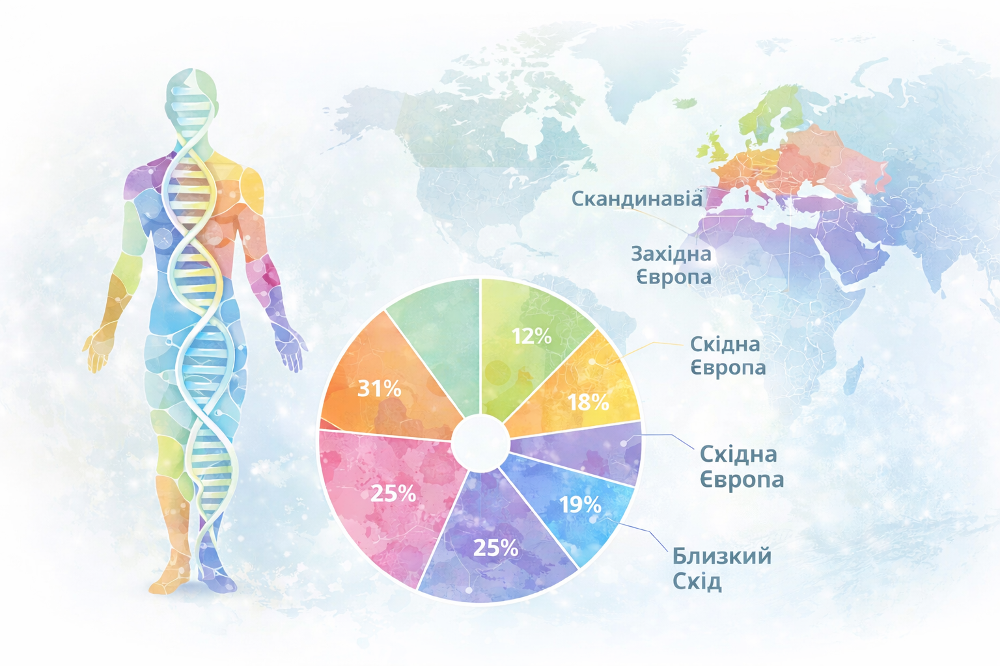
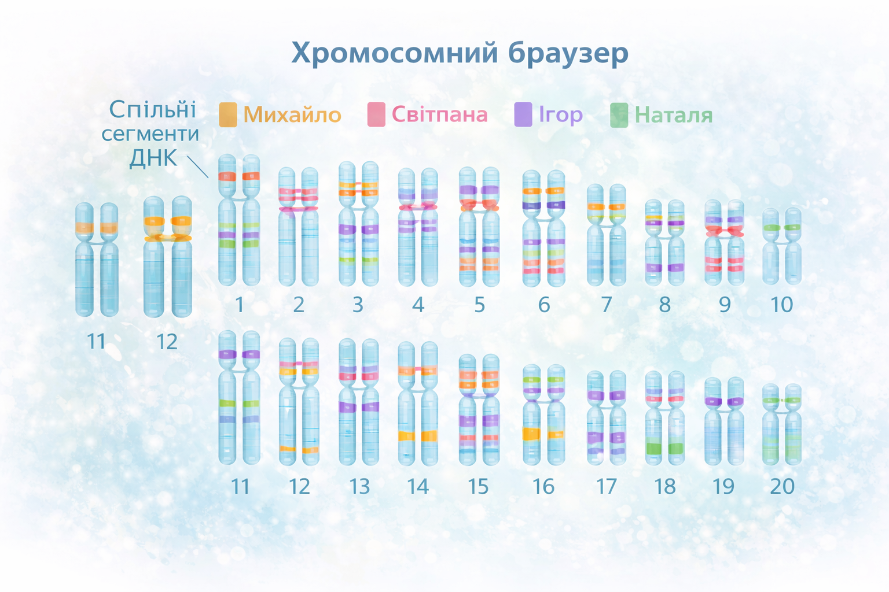
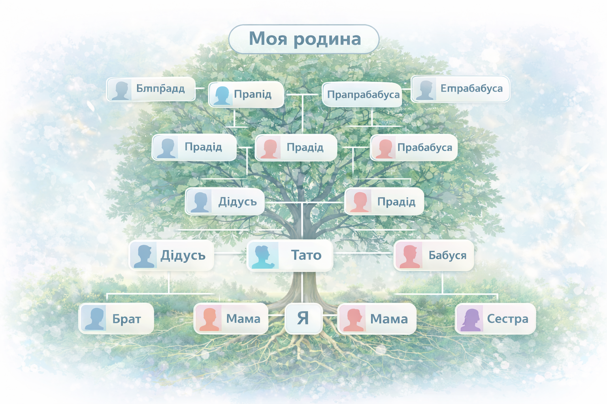
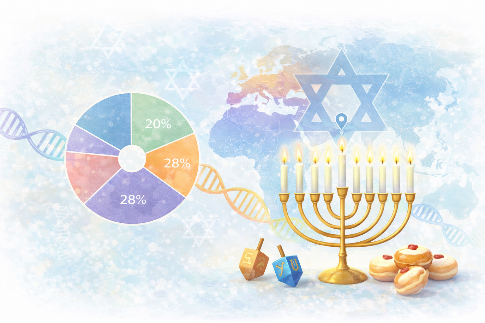

Проводимо глибокі генеалогічні дослідження з використанням архівних документів, метричних книг, ревізьких казок, переписів населення та інших історичних джерел. Допомагаємо відновити повну картину походження вашої родини.
Створюємо наочні родовідні дерева у графічному та цифровому форматі. Структуруємо дані про покоління, дати життя, родинні зв’язки та географію походження.
Використовуємо сучасні біоінформатичні методи для аналізу генетичних даних та розрахування ймовірності родинних зв’язків між особами.
Допомагаємо визначити етнічний склад родини на основі історичних, демографічних та генетичних даних з урахуванням регіональних особливостей.



Єврейське походження визначається за характерними генетичними маркерами, що сформувалися внаслідок спільної історії та міграцій єврейських громад.
Виділяють ашкеназькі, сефардські та мізрахійські популяції, кожна з яких має власні особливості ДНК-профілю.
Аналіз спільних сегментів ДНК дозволяє визначити родинні зв’язки, спільних предків та ступінь генетичної близькості.
Найточніші результати досягаються при поєднанні ДНК-аналізу з архівними джерелами: метричними книгами та документами громад.

1. Збір початкової інформації та консультація
На першому етапі ми проводимо детальну консультацію, під час якої
збираємо від клієнта наявні відомості про родину: імена, дати,
місця проживання, сімейні легенди, документи та результати ДНК-тестів,
якщо вони є. Визначаємо цілі дослідження та обсяг робіт.
2. Архівний та генетичний аналіз
Проводимо пошук і аналіз архівних джерел: метричних книг,
актових записів, переписів населення, документів релігійних громад
та інших історичних матеріалів. Паралельно здійснюємо
генетичний аналіз із застосуванням біоінформатичних методів.
3. Перевірка та систематизація даних
Усі знайдені дані проходять ретельну перевірку на достовірність.
Ми зіставляємо інформацію з різних джерел, усуваємо неточності
та формуємо структуровану базу даних родини.
4. Формування родовідного дерева та звіту
На основі перевірених даних створюємо родовідне дерево
у наочному графічному вигляді. Готуємо письмовий звіт
з описом знайдених поколінь, родинних зв’язків,
міграційних шляхів та історичного контексту.
5. Передача результатів клієнту
Клієнт отримує готові матеріали: родовідне дерево,
аналітичний звіт та рекомендації для подальших досліджень.
За потреби надаємо консультації щодо інтерпретації результатів
та можливих наступних кроків.
«Завдяки дослідженню ми дізналися історію нашої родини до п’ятого покоління. Робота виконана професійно та з великою увагою до деталей».
— Олена, Київ
«Особливо вразив науковий підхід та пояснення результатів аналізу. Рекомендую всім, хто хоче зрозуміти своє походження».
— Андрій, Львів
Біолог-генетик с 10-річним досвідом роботи в ДНК-генеалогії.
Біоінформатик, аналітик біоінформаційних систем